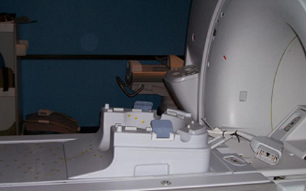
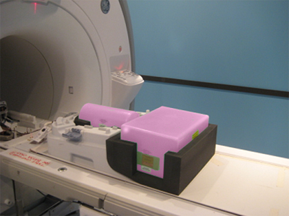
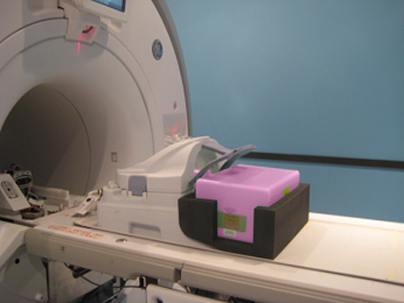
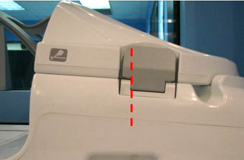
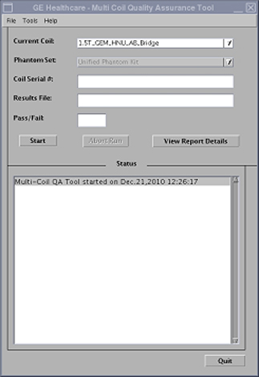

Operating Documentation
Direction 5670006, Rev# 1
Discovery MR750w GEM Service Methods
Module Version 3.0, Version Date 9/27/11
Operating Documentation |
| Required Persons | Preliminary Reqs | Procedure | Finalization |
|---|---|---|---|
| 1 | Not Applicable | 30 mins | Not Applicable |
The 1.5T GEM Coil MCQA will utilize the 1.5T phantoms, which are green in color. The 3.0T GEM Coil MCQA will utilize the 3.0T phantoms, which are pink in color.
| NOTE: | Coils do not ship with phantoms. Phantoms come in a Unified Phantom set with the MR System. |
| Item | Qty | Effectivity | Part# | Manufacturer | |
|---|---|---|---|---|---|
| Large Cylindrical Unified Phantom (For 1.5T) | 1 | - | 5342679 | - | |
| TL Unified Phantom (For 1.5T) | 1 | - | 5343347 | - | |
| Large Cylindrical Unified Phantom (For 3.0T) | 1 | - | 5342679-2 | - | |
| TL Unified Phantom (For 3.0T) | 1 | - | 5343347-2 | - | |
| Head Neck Unit (HNU) Phantom Positioner (For both 1.5T and 3.0T) | 1 | - | 5405750 | - | |
Remove the Flat Filler Panel from the GEM table if present.
Place the HNU posterior unit on the GEM table as shown.
Illustration 1: Placement of HNU Posterior Unit

Place the HNU Phantom Positioner into the HNU posterior unit, then place the Large Cylindrical Unified Phantom and TL Unified Phantom into the Positioner.
Illustration 2: Placement of Large Cylindrical and TL Unified Phantoms

Connect the HNU AB bridge unit with the HNU posterior unit.
Illustration 3: Connection of HNU AB Bridge and Posterior Units

Connect the coil to the P2 Port on the GEM table, landmark the coil at the crosshair mark (indicated below), and press [Advance to Scan].
Illustration 4: Landmarking Coil

Run the Multi-Coil Quality Assurance Tool. Ensure that the correct coil is selected in the Current Coil field: 1.5T_GEM_HNU_AB_Bridge (shown below) or 3.0T_GEM_HNU_AB_Bridge for a 3.0T system.
Illustration 5: MCQA Tool Menu

No finalization steps.